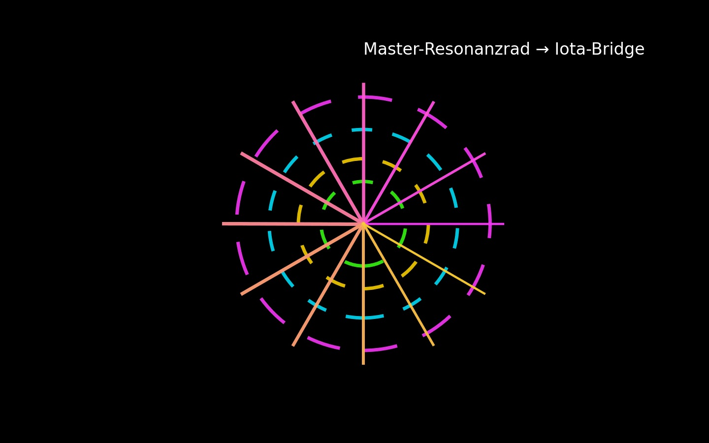
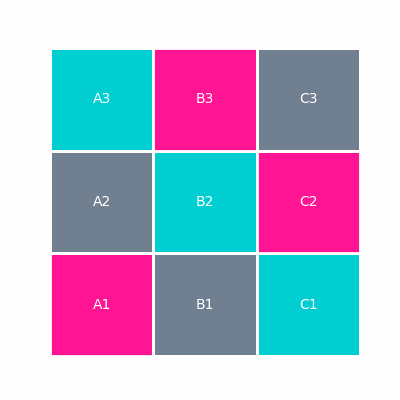

Standard optics lane
Newton: geordnete Zerlegung
Das linke Fenster zeigt die bekannte Darstellungsrichtung: Ein weißer Eingang wird in eine geordnete Folge spektraler Bänder aufgefächert.
Keine neue Lichttheorie, sondern eine neu gefügte Vergleichsanordnung: Newton zeigt die spektrale Zerlegung. Die Leibniz-Linse ordnet Verschiedenheit als Relation. Die Goethe-Linse zeigt Farbe als Erscheinung an einer Grenze. Der Observer hält den Vergleichspunkt — er verbindet die drei Fenster, ohne ihre Aussagen gleichzusetzen.
α orientiert die projizierte Pyramidenkante, β den getrennten Observer. Sein Vorzeichen wechselt die Seite. Q° ist ein endliches 4+1-Display mit vier 90°-Richtungen und einem Sichtkegel zum Pink Strip. 530 nm bleibt eine Wellenlängenreferenz; Gradwerte bleiben Winkel.
Zwei Leseseiten teilen eine Naht. Die Schleifen zeigen eine deklarierte Hopf-Fold-Projektion – keine zusätzliche Raumdimension.
Dies ist keine vierte Theorie des Lichts. Die Bühne legt drei bestehende Perspektiven nebeneinander und macht ihre Unterschiede navigierbar. Q° hält den Ort des Vergleichs; es vereinigt weder die historischen Positionen noch ihre physikalischen Aussagen.
Das linke Fenster zeigt die bekannte Darstellungsrichtung: Ein weißer Eingang wird in eine geordnete Folge spektraler Bänder aufgefächert.
Das mittlere Moiré bewahrt beide Eingaben als Verschiedene: A ≠ B und Innen ≠ Außen. Sichtbar wird ihre relationale Spur — nicht eine neue Substanz zwischen ihnen.
Das rechte Fenster setzt Hell–Dunkel-Grenze und Beobachterlage ins Bild. Es ist eine Vergleichslinse, keine Gleichsetzung mit Newtons Optik.
Leseschlüssel: Drei getrennte Perspektiven, ein gemeinsamer Beobachtungsrahmen. Relation ist hier keine Identität; die Darstellung ist keine kalibrierte optische Messung.
Ein gemeinsamer 3+1-Träger führt drei gebundene Lichtwege zu einem Observer-Gate. Darunter lesen vier Projektionen denselben Datensatz: BANDS vergleicht Lichtlaufzeiten, RINGS zeigt logarithmische Gleichzeit-Konturen, STAR MAP ordnet die drei Distanzrecords schematisch und TRAIL hält die lokale Auswahlhistorie. Fünf Register verbuchen Quelle, Distanz, Laufzeit, Pfad und c; Kilometer, internationale Meile und ein ausdrücklich deklarierter 0,52-m-Cubit ändern nur die Zahlendarstellung — weder Strecke noch Lichtgeschwindigkeit.
c=299.792.458 m/s ist exakt. 1 au=149.597.870.700 m ist eine exakte Längeneinheit; die reale Erde–Sonne-Distanz variiert. 384.400 km ist eine mittlere Mondentfernung, 8,6 Lichtjahre für Sirius ist gerundet. Der Mond ist in diesem Datensatz ein Distanz- und reflektierter Lichtweg, keine eigenständige Lichtquelle. Das Observer-Gate markiert ein gemeinsames Empfangsereignis; seine Furche zwischen den Pulsen ist ein normalisierter Anzeigeabstand, kein Medium oder Widerstand. Direkte Lichtlaufzeit ist Verzögerung, nicht Echo. Nur +25% declared path fügt einen synthetischen Weg hinzu. Bandlängen und Ringradien sind logarithmische Anzeigen; Sternwinkel sind schematische Layoutkoordinaten. Die Schlieren sind Dichte-/Nachbildlinien der Anzeige und im Trail eine lokale Bedienhistorie — kein Medium, keine Bahn, kein Photonpaket und kein gemessener Widerhall.Foundation 01 hat Lichtlaufzeiten in mehreren Buchhaltungsrastern verglichen. Foundation 02 hält die Physik fest und wechselt nur die Rolle derselben sichtbaren Ziffern: Aus dem SI-Wert wird am Type Gate ein einheitenloser Integer-Testträger; erst dieser wird als endliche Adresse gepackt. Die Messgröße bleibt auf ihrer Seite der Grenze.
299792458 kann als Ziffernfolge gleich aussehen und trotzdem Verschiedenes bedeuten. Entscheidend sind Typ, Einheit und Operation — nicht die optische Ähnlichkeit.
Wert und Einheit gehören zusammen.
Nur der deklarierte Integer passiert das Gate.
Eine endliche Adresse — kein Raum und kein Lichtweg.
c bleibt die exakte SI-Konstante. Die drei Distanzraster ändern nur die Schreibweise; t=d/c bleibt gleich.
Tour III führt ausschließlich durch MEASURE → D/C GRIDS → TYPE GATE → PACK → RETURN. ENERGY, PLANCK und SIGNAL H0/H1/H2 sind getrennte Vertiefungsfenster, keine weiteren Tourstationen.
RETURN: Der Codec liefert den Integer 299792458 exakt zurück. Er rekonstruiert weder die Einheit noch die physikalische Messgröße.
Diese Klappe liest vorhandene GH-/QGR-Marker in drei Schalen. Nur die innere Schale behauptet Mathematik: Dort gelten nachrechenbare Potenzen, Faktoren und Quotienten. Die mittlere Schale bewahrt historische NEXAH-Adressen. Die äußere Schale hält Sprachspuren offen, ohne daraus Physik zu machen.
12 644 353 ist keine Neunerpotenz. Die historische Tafel wird hier geprüft, nicht stillschweigend bestätigt.
1561, 1674, 14335 und 9752 bleiben auffindbare Marker des vorhandenen GH-/QGR-Korpus. Quotienten wie 1561/1729 = 0,902834… oder 1674/1676 = 0,998807… sind Rechenspuren — noch keine Resonanzgesetze.
G / H, HOF, JEDI, Force Outstream, MA·TER·IA oder AM000A dürfen als Denk- und Wortmarker weiterwandern. Sie werden nicht rückwirkend zu Graviton, Higgs-Feld, String-Dimension oder Naturgleichung erklärt.
Poetische Anschlussfähigkeit bleibt erhalten; wissenschaftliche Bedeutung bleibt offen.c=299.792.458 m/s und der Integer 299792458 haben dieselben Ziffern, aber verschiedene Typen. Am Type Gate bleiben Einheit und SI-Typ auf der Messseite; der exakte Codec-Return rekonstruiert nur den Integer. Die ADDR28-Packung simuliert weder Ausbreitung noch Raum. hν, kBT und mc² werden nicht additiv vereinigt; dimensionslose Quotienten sind Vergleichskoordinaten. Die Planck-Kurve ist etablierte Referenzphysik. CHANNEL.H0/H1/H2 ist ein synthetischer Rechenvertrag für Amplitude, Modulationsphase und Residuum — keine HD/HDL-Erzählung und keine entdeckten Lichtschichten. VIEW.H/D/L ist nur Interfacegrammatik. WATER.HDL/LDL, das 7.83→8D-Übergangsbild, planetare Temperaturen und Materialbehauptungen werden nicht in das Modell übernommen. E=mc·k^β bleibt ohne typisierte Definition von k und β ausgeschlossen. Kein gemessenes Optikexperiment, kein kosmischer Loop und keine variable Lichtgeschwindigkeit.Das obere Instrument bleibt Vergleichslinse. Beim Scrollen wird daraus eine endliche Bühnengrammatik: fünf benannte Stationen, vier Quarter-Turn-Lagen und ein gemeinsamer Return nach zwanzig eindeutigen Adressen.
The Dusty Starry Sky · Flow and Relation · How do I feel the sky?C5 × C4 besitzt zwanzig Zustandsadressen. Das Zentrum Q bleibt fest; der Gradmarker wandert. Nach je fünf Schritten wechselt die Orientierung: 0° → 90° → 180° → 270° → 360° ≡ 0°.


Dieselbe Adresse wird als Faltung gelesen: zwei pentagonale Seiten, eine gemeinsame Naht, Q° als Gegenansicht. Das ist ein Displayvertrag für Innen/Außen und Öffnen/Schließen — keine zusätzliche Raumdimension und kein physikalischer Mechanismus.
Die zwei Schichten öffnen sich an der farbigen Fuge. Der Return schließt die Zustandsadresse, nicht die Erfahrung: periodic station return ≠ orientation return before step 20. „Sky“ bezeichnet hier Perspektive, Atmosphäre und Relation — nicht ein neues kosmologisches Modell.
C5 × C4, ihre 20 verschiedenen Adressen und der gemeinsame Return nach lcm(5,4)=20 Schritten. Die obere 5+1-Leseuhr ist eine getrennte Projektion: 5 → 4 → 3 → 2 → 1 bezeichnet die fünf Lesestationen, während Q als Vergleichsanker gehalten wird; sie ist weder sechste Station noch Zeitmessung und ersetzt den 20-Adressen-Ledger nicht. AM/PM/VM, Iota, Q°, Double Pentagon, Cube, Stage und Dusty Starry Sky sind deklarierte Interface- und Erzählrollen. Sie behaupten keine neue Optik, Kosmologie, Zeitordnung, zusätzliche Dimension oder physikalische Wirkung.λref=530 nm, Pyramidenkante α und Observer β bilden ein typisiertes Koordinatentupel; Nanometer und Grad werden nicht addiert. Q°, π, φ, √2 und √7 sind hier Rollenlabels eines endlichen 4+1-Observer-Displays. Der Kegel ist ein Sichtfenster zum Pink Strip, kein optischer Messkegel. P5 und H6×2 sind endliche Display-Overlays mit exakt deklarierter Teilung, keine optischen, kristallographischen oder physikalischen Identitäten. Goethes Polarität steuert einen gemeinsamen kühlen beziehungsweise warmen visuellen Feldzustand in Relation, Iota, Book und Sky; sie erzeugt keinen gemeinsamen Physikoperator. Newton und die Messgrundlagen bleiben davon neutral. Das Instrument behauptet weder, Goethes Farbenlehre ersetze Newtons Optik, noch dass das Moiré die drei Positionen physikalisch vereinheitliche. Wellenlängen-Samples, Winkel und Differenzfeld bleiben eine interaktive, nicht kalibrierte Vergleichsdarstellung. Kein E8-Bezug, keine Universalresonanz, keine neue Physik.